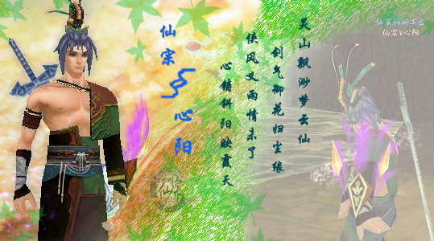

不应该放弃
直到失去的那一刻
我见过多少~
在奋斗中无奈放弃的人
无责任随意来去的人
热情支持甚至揣着零钱去购买仙剑的人
能忘记他们的脸吗？
不能！
看到他们
我发誓
我要坚持下去
因为我似乎感觉到我有这样的~义务~
哪怕环境恶劣
就业形势严峻
但是
谁说今后我不能认认真真地为仙剑做出贡献
不是吗？
笑~。。。。。。。。。
虽然
我编的C++程序还不多
DirectX和Socket编程刚入门
虽然
我没有那么深的文学功底
接触的游戏并不多
虽然
我现在仅仅是个普普通通的大学生
但是
我却有着一份执着的心
八年的仙剑情让我意识到自己的责任
看着你们的招聘信息
我浮想联翩~
曾经的你们早已无缘相聚
现在的我
难道就不能续写新的篇章？
以你们的情作为我的座右铭
心铸斜阳映霞天！。。

——小龙云 心情随笔